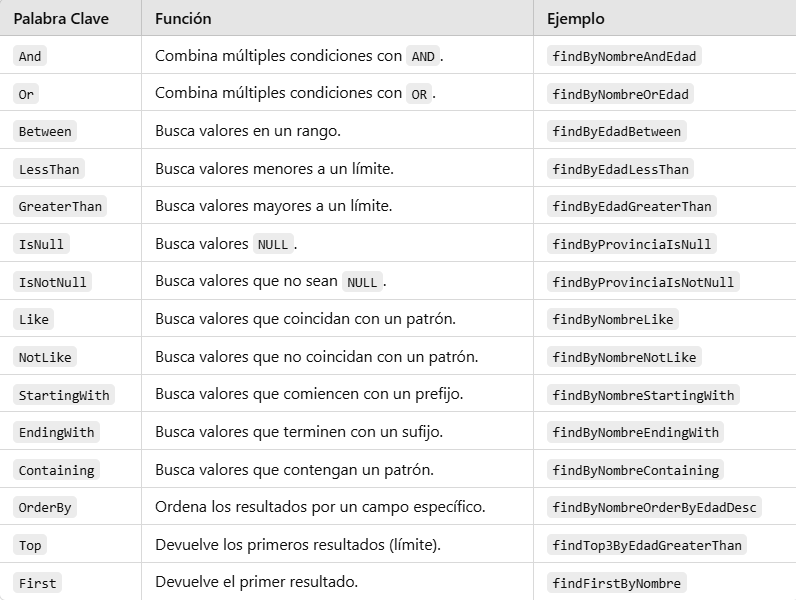
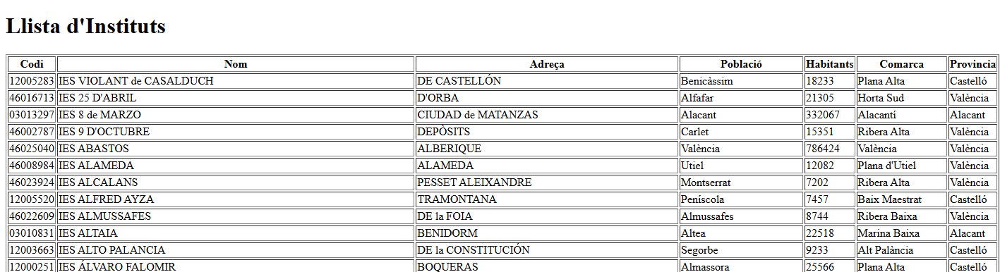
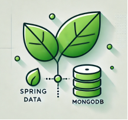
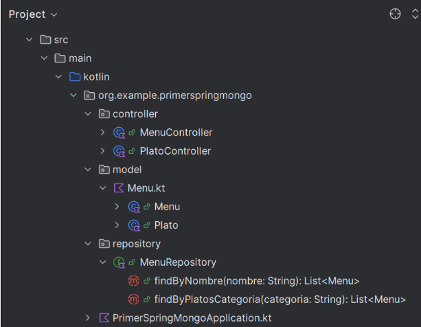
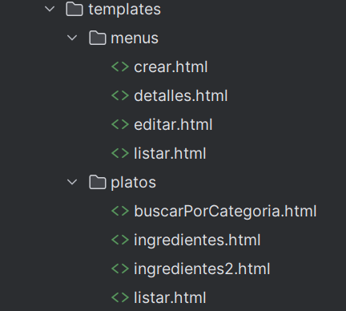
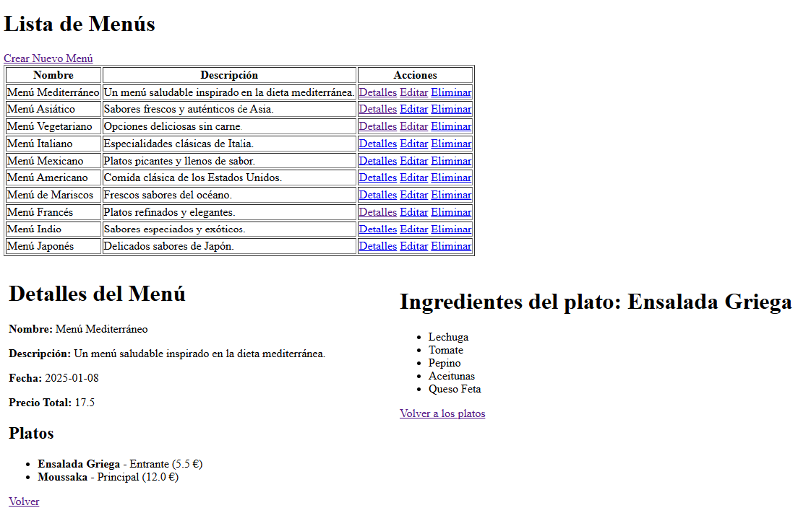

Spring Data
Spring Data es un proyecto dentro del ecosistema Spring que proporciona herramientas y abstracciones para facilitar el acceso a bases de datos y otras fuentes de datos de manera eficiente y consistente. Su objetivo principal es simplificar la interacción con diferentes tipos de bases de datos, desde bases de datos relacionales (como PostgreSQL, MySQL) hasta bases de datos NoSQL (como MongoDB, Cassandra).
¿Para qué se utiliza?
1) Acceso Simplificado a Datos:
- Reduce la necesidad de escribir consultas SQL complejas o código JDBC al exponer métodos predefinidos para operaciones comunes.
- Permite realizar operaciones CRUD (Crear, Leer, Actualizar, Eliminar) con facilidad.
2) Abstracción de Repositorios:
Ofrece la interfaz Repository y subinterfaces como CrudRepository y JpaRepository que proporcionan métodos estándar para la gestión de entidades en bases de datos relacionales.
3) Consultas Personalizadas:
Permite escribir consultas personalizadas mediante anotaciones como @Query. También admite la creación de métodos de consulta basados en el nombre del método, como findByNombre(String nombre).
4) Compatibilidad con Múltiples Tecnologías de Bases de Datos:
- Relacionales: Mediante JPA (Java Persistence API).
- NoSQL: MongoDB, Redis, Neo4j, Cassandra, etc.
- Buscadores: Elasticsearch, Solr.
5) Configuración Declarativa:
Al integrar Spring Data con Spring Boot, se pueden configurar muchas opciones mediante propiedades en application.properties, evitando configuraciones manuales detalladas.
6) Integración con Spring Boot:
Con dependencias específicas como spring-boot-starter-data-jpa o spring-boot-starter-data-mongodb, Spring Data se integra perfectamente con el resto del ecosistema de Spring.
Principales Módulos de Spring Data
Spring Data JPA:: Proporciona una integración con JPA para bases de datos relacionales. Es ideal para trabajar con entidades Java mapeadas a tablas de bases de datos. JPA es la especificación para persistir, leer y gestionar data desde los objetos Java a la base de datos.
Spring Data MongoDB:: Facilita el acceso a bases de datos MongoDB, una base de datos NoSQL orientada a documentos.
Spring Data Redis:: Para aplicaciones que necesitan interactuar con Redis, una base de datos en memoria.
Spring Data Cassandra:: Proporciona soporte para bases de datos distribuidas como Cassandra.
Spring Data Elasticsearch:: Simplifica las interacciones con Elasticsearch, un motor de búsqueda y análisis.
Spring Data JPA
Spring Data JPA es parte de Spring Framework. No es una implementación de JPA como Hibernate, sino una abstracción para reducir la complejidad de la integración con bases de datos relacionales desde aplicaciones Java. Spring Data JPA puede utilizar Hibernate, Eclipse Link u otra implementación.
Anotaciones Comunes
1. Mapeo de Entidades (JPA Estándar)
Estas anotaciones son parte de JPA y permiten mapear clases y relaciones a tablas en la base de datos.
-
@Entity - Marca una clase como una entidad JPA, mapeada a una tabla en la base de datos.
@Entity data class User( @Id val id: Long, val name: String ) -
@Table - Especifica el nombre de la tabla que corresponde a la entidad.
@Entity @Table(name = "users") data class User( @Id val id: Long, val name: String ) -
@Id - Indica que un campo es la clave primaria de la tabla.
@Id val id: Long -
@GeneratedValue - Define cómo se genera el valor de la clave primaria.
Estrategias comunes:
GenerationType.IDENTITY,GenerationType.SEQUENCE, etc.
@Id
@GeneratedValue(strategy = GenerationType.IDENTITY)
val id: Long
-
@Column - Configura una columna de la tabla, como nombre, si es nula o única.
@Column(name = "user_name", nullable = false, unique = true) val name: String -
@ManyToOne, @OneToMany, @OneToOne, @ManyToMany
Define relaciones entre entidades.
@ManyToOne
val department: Department
-
@JoinColumn - Especifica la columna que actúa como clave foránea.
@ManyToOne @JoinColumn(name = "department_id") val department: Department -
@Lob - Indica que un campo es un objeto grande (texto o binario).
@Lob val description: String -
@Transient - Excluye un campo del mapeo de base de datos (no se almacena).
@Transient val calculatedField: String
2. Específicas de Spring Data JPA
Estas anotaciones son propias de Spring Data JPA y extienden la funcionalidad de JPA.
-
@Repository - Marca una interfaz o clase como repositorio Spring.
@Repository interface UserRepository : JpaRepository<User, Long> -
@Query - Define una consulta personalizada usando JPQL o SQL nativo.
- Ejemplo (JPQL):
@Query("SELECT u FROM User u WHERE u.name = :name")
fun findByName(@Param("name") name: String): List<User>
- Ejemplo (SQL nativo):
@Query(value = "SELECT * FROM users WHERE user_name = :name", nativeQuery = true)
fun findByNameNative(@Param("name") name: String): List<User>
@Param - Define parámetros nombrados para consultas con @Query.
@Query("SELECT u FROM User u WHERE u.name = :name")
fun findByName(@Param("name") name: String): List<User>
@Modifying - Se utiliza con consultas @Query para operaciones de actualización o eliminación.
@Modifying
@Query("UPDATE User u SET u.name = :name WHERE u.id = :id")
fun updateName(@Param("id") id: Long, @Param("name") name: String)
@EnableJpaRepositories - Habilita la funcionalidad de Spring Data JPA y escanea paquetes para detectar repositorios.
@EnableJpaRepositories(basePackages = ["com.example.repository"])
@EntityGraph - Especifica cómo cargar las relaciones en una consulta, evitando lazy loading.
@EntityGraph(attributePaths = ["roles"])
fun findByName(name: String): User
3. Transacciones
-
@Transactional - Marca un método o clase para ejecutar dentro de una transacción.
@Transactional fun updateUserDetails(user: User) { ... } -
@Rollback - Utilizada en pruebas para forzar la reversión de una transacción.
@Transactional @Rollback fun testSaveUser() { ... }
Consultas a la Base de Datos
Las consultas a la Base de datos las podemos hacer de dos maneras, utilizando la convención de nombres en funciones de Spring Data JPA o con la anotación @Query.
La convención de nombres se utiliza:
- En consultas sencillas y que no requieren lógica compleja ni múltiples combinaciones.
- Cuando quieres mantener un código más limpio y directo.
La anotación @Query se utiliza:
- En consultas complejas que involucren múltiples tablas, condiciones avanzadas o subconsultas.
- Si prefieres optimizar manualmente las consultas.
- Cuando la convención de nombres generaría un nombre de método excesivamente largo.
@Query
Estructura básica:
@Query("SELECT e FROM EntityName e WHERE e.property = :value")
fun findByProperty(@Param("value") value: String): List<EntityName>
- Se utilizan nombres de entidades y propiedades de las clases en lugar de nombres de tablas y columnas.
- Se puede navegar por relaciones entre entidades.
- :nombreParametro para parámetros dinámicos.
Ejemplo simple:
@Query("SELECT c FROM Comarca c WHERE c.provincia = :provincia")
fun findByProvincia(@Param("provincia") provincia: String): List<Comarca>
Ejemplo con relaciones:
Siguiendo con nuestro ejemplo de geo_ad, la consulta par buscar Institutos en una Provincia por Población Mínima quedaría así:
@Query("""
SELECT i FROM Institut i
JOIN i.poblacio p
JOIN p.comarca c
WHERE c.provincia = :provincia AND p.poblacion >= :minPoblacion
""")
fun findByProvinciaAndPoblacion(
@Param("provincia") provincia: String,
@Param("minPoblacion") minPoblacion: Int
): List<Institut>
Este mismo ejemplo utilizando convención de nombres quedaría así:
@Repository
interface InstitutRepository : JpaRepository<Institut, String> {
fun findByPoblacioComarcaProvinciaAndPoblacioPoblacionGreaterThanEqual(
provincia: String,
minPoblacion: Int
): List<Institut>
}
- findBy: Indica que es un método de consulta.
- PoblacioComarcaProvincia: Navega por las relaciones de las entidades Institut Poblacio -> Comarca para filtrar por la provincia.
- AndPoblacioPoblacionGreaterThanEqual: Navega por Institut -> Poblacio y aplica el filtro de población mínima.
A medida que las relaciones aumentan en complejidad, los nombres de los métodos pueden volverse difíciles de leer y mantener.
Convención de Nombres en Spring JPA
Spring Data JPA permite definir métodos en repositorios siguiendo una convención de nombres específica. Esto simplifica la escritura de consultas comunes sin necesidad de usar JPQL o SQL. Para ello analiza el nombre de los métodos en el repositorio e interpreta su significado para generar consultas automáticamente.
La estructura básica es:
findBy + NombreDeCampo + Condición
1) findBy:
Indica que se busca una entidad en la base de datos. Alternativas:
- readBy (lectura de datos)
- queryBy (consulta de datos)
- getBy (obtener datos)
2) NombreDeCampo:
- Debe coincidir exactamente con el nombre del atributo en la entidad.
- Se puede incluir navegación de atributos para relaciones (EntidadRelacionada.Atributo).
3) Condición (opcional):
- Permite añadir operadores lógicos como And, Or, etc.
- Ejemplo: findByNombreAndEdad.
Ejemplos de métodos según la convención
-
Consultas simples
- Método: findByNombre(String nombre)
- Consulta generada:
SELECT * FROM entidad WHERE nombre = ?
-
Consultas con condiciones
- Método: findByNombreAndEdad(String nombre, Integer edad)
- Consulta generada:
SELECT * FROM entidad WHERE nombre = ? AND edad = ?
-
Consultas con orden
- Método: findByNombreOrderByEdadDesc(String nombre)
- Consulta generada:
SELECT * FROM entidad WHERE nombre = ? ORDER BY edad DESC
-
Consultas con relaciones. Si hay una relación entre entidades, se puede navegar por los campos relacionados:
- Método: findByComarcaNomC(String nomC)
- Consulta generada:
SELECT * FROM entidad e JOIN comarca c ON e.comarca_id = c.id WHERE c.nomC = ?
Palabras clave en la convención

Consideraciones
- Coincidencia exacta del nombre del campo: Los nombres deben coincidir con los atributos definidos en la entidad.
- Relaciones: Usa la notación EntidadRelacionada.Atributo para navegar entre tablas relacionadas.
- Orden: Los métodos pueden incluir palabras clave de ordenación, como OrderBy.
- Parámetros: Los métodos generados reciben parámetros en el mismo orden en que se declaran en el nombre del método.
Ejemplo ampliado de Spring MVC
Para practicar la funcionalidad de Spring Data JPA vamos a seguir con el ejemplo visto en el apartado de Spring MVC PrimerSpringMVC. Recordemos que la aplicación accede a la base de datos local en Docker. En este ejemplo vamos a mapear las 3 tablas de la base de datos: comarca, poblacio e institut y a realizar los cambios necesarios para crear algunas consultas y operaciones CRUD.
Modelo (Entidad JPA)
- Entidad Comarca.
La única diferencia con el ejemplo que tenemos es que mapea el nombre de la columna nom_c por nomC para evitar problemas de convenció de nombres.
import jakarta.persistence.*
@Entity
@Table(name = "comarca")
data class comarca(
@Id
@Column(name = "nom_c")
val nomC: String = "",
@Column(name = "provincia")
val provincia: String? = null
)
-
Entidad Poblacio
import jakarta.persistence.* @Entity @Table(name = "poblacio") data class poblacio( @Id @Column(name = "cod_m") val codM: Int = 0, @Column(name = "nom") val nom: String = "", @Column(name = "poblacio") val poblacio: Int? = null, @Column(name = "extensio") val extensio: Double? = null, @Column(name = "altura") val altura: Int? = null, @Column(name = "longitud") val longitud: String? = null, @Column(name = "latitud") val latitud: String? = null, @Column(name = "llengua") val llengua: String? = null, @ManyToOne //clave ajena a comarca @JoinColumn(name = "nom_c", referencedColumnName = "nom_c") val comarca: comarca? = null ) -
Entidad Institut
import jakarta.persistence.* @Entity @Table(name = "institut") data class institut( @Id @Column(name = "codi") val codi: String = "", @Column(name = "adreca") val adreca: String? = null, @Column(name = "codpostal") val codPostal: Int? = null, @Column(name = "nom") val nom: String? = null, @Column(name = "numero") val numero: String? = null, @ManyToOne //clave ajena a poblacio @JoinColumn(name = "cod_m", referencedColumnName = "cod_m") val poblacio: poblacio? = null )
Repositorio
-
Repositorio para Comarca: ComarcaRepository.
import org.example.primerspringmvc.model.comarca import org.springframework.data.jpa.repository.JpaRepository import org.springframework.stereotype.Repository @Repository interface ComarcaRepository : JpaRepository<comarca, String> { // Obtener comarcas de una provincia fun findByProvincia(provincia: String): List<comarca> } -
Repositorio para Institut: InstitutRepository
package org.example.primerspringmvc.repository import org.example.primerspringmvc.model.institut import org.springframework.data.jpa.repository.JpaRepository interface InstitutRepository : JpaRepository<institut, String> { // Obtener institutos de una población fun findByPoblacioNom(nom: String): List<institut> // Obtener institutos de una comarca fun findByPoblacioComarcaNomC(nomC: String): List<institut> // Obtener institutos de una provincia fun findByPoblacioComarcaProvincia(provincia: String): List<institut> // Obtener institutos cuya población es mayor a fun findByPoblacioPoblacioGreaterThan(poblacio: Int): List<institut> } -
Repositorio para Poblacio: PoblacioRepository
import org.example.primerspringmvc.model.poblacio import org.springframework.data.jpa.repository.JpaRepository interface PoblacioRepository : JpaRepository<poblacio, String> { // Obtener poblaciones de una comarca fun findByComarcaNomC(nomC: String): List<poblacio> // Obtener poblaciones de una provincia fun findByComarcaProvincia(provincia: String): List<poblacio> }
Controlador
-
ComarcaController
import org.example.primerspringmvc.model.comarca import org.springframework.stereotype.Controller import org.example.primerspringmvc.repository.* import org.springframework.ui.Model import org.springframework.web.bind.annotation.*// Muestra todas las poblaciones @GetMapping fun listarTodasPoblacions(model: Model): String { val poblacions = poblacioRepository.findAll() model.addAttribute("poblacions", poblacions) return "poblacions" // Vista Thymeleaf para mostrar todas las poblaciones }
// Muestra las poblaciones por comarca @GetMapping("/por-comarca") fun listarPoblacionsPorComarca(@RequestParam comarca: String, model: Model): String { val poblacions = poblacioRepository.findByComarcaNomC(comarca) model.addAttribute("poblacions", poblacions) return "poblacions" // Vista Thymeleaf para mostrar las poblaciones por comarca } -
InstitutController
import org.example.primerspringmvc.model.institut import org.example.primerspringmvc.repository.InstitutRepository import org.springframework.stereotype.Controller import org.springframework.ui.Model import org.springframework.web.bind.annotation.* @Controller @RequestMapping("/instituts") class InstitutController(private val institutRepository: InstitutRepository) { //Muestra todos los intitutos @GetMapping fun listarInstituts(model: Model): String { val instituts = institutRepository.findAll() model.addAttribute("instituts", instituts) return "instituts" } // Muestra institutos de una población @GetMapping("/por-poblacio") fun obtenerInstitutsPoblacio(@RequestParam poblacio: String, model: Model): String { val institutsPoblacio = institutRepository.findByPoblacioNom(poblacio) model.addAttribute("instituts", institutsPoblacio) return "instituts" // Plantilla para mostrar la lista de institutos } // Muestra institutos de una comarca @GetMapping("/por-comarca") fun obtenerInstitutsComarca(@RequestParam comarca: String, model: Model): String { val institutsComarca = institutRepository.findByPoblacioComarcaNomC(comarca) model.addAttribute("instituts", institutsComarca) return "instituts" // Plantilla para mostrar la lista de institutos } // Muestra institutos de una provincia @GetMapping("/por-provincia") fun obtenerInstitutsProvincia(@RequestParam provincia: String, model: Model): String { val institutsProvincia = institutRepository.findByPoblacioComarcaProvincia(provincia) model.addAttribute("instituts", institutsProvincia) return "instituts" // Plantilla para mostrar la lista de institutos } // Muestra institutos con población superior a un valor @GetMapping("/poblacion-superior") fun obtenerInstitutsPoblacionSuperior(@RequestParam poblacio: Int, model: Model): String { val institutsConPoblacionSuperiorA = institutRepository.findByPoblacioPoblacioGreaterThan(poblacio) model.addAttribute("instituts", institutsConPoblacionSuperiorA) return "instituts" // Plantilla para mostrar la lista de institutos } } -
PoblacioController
import org.example.primerspringmvc.repository.PoblacioRepository import org.springframework.stereotype.Controller import org.springframework.ui.Model import org.springframework.web.bind.annotation.* @Controller @RequestMapping("/poblacions") class PoblacioController(private val poblacioRepository: PoblacioRepository) { // Muestra todas las poblaciones @GetMapping fun listarTodasPoblacions(model: Model): String { val poblacions = poblacioRepository.findAll() model.addAttribute("poblacions", poblacions) return "poblacions" // Vista Thymeleaf para mostrar todas las poblaciones } // Muestra las poblaciones por comarca @GetMapping("/por-comarca") fun listarPoblacionsPorComarca(@RequestParam comarca: String, model: Model): String { val poblacions = poblacioRepository.findByComarcaNomC(comarca) model.addAttribute("poblacions", poblacions) return "poblacions" // Vista Thymeleaf para mostrar las poblaciones por comarca } @GetMapping("/por-provincia") fun listarPoblacionsPorProvincia(@RequestParam provincia: String, model: Model): String { val poblacions = poblacioRepository.findByComarcaProvincia(provincia) model.addAttribute("poblacions", poblacions) return "poblacions" // Vista Thymeleaf para mostrar las poblaciones por comarca } }
Vistas Thymeleaf
-
Vista comarcas.html
<!DOCTYPE html> <html xmlns:th="http://www.thymeleaf.org"> <head> <title>Lista de Comarcas</title> </head> <body> <h1>Lista de Comarcas</h1> <table border="1"> <tr> <th>Comarca</th> <th>Provincia</th> </tr> <tr th:each="comarca : ${comarcas}"> <td th:text="${comarca.nomC}">Comarca</td> <td th:text="${comarca.provincia}">Provincia</td> </tr> </table> </body> </html> -
Vista nueva-comarca.html
<!DOCTYPE html> <html xmlns:th="http://www.thymeleaf.org"> <head> <title>Nueva Comarca</title> </head> <body> <h1>Nueva Comarca</h1> <form th:action="@{/comarcas/nueva}" th:object="${comarca}" method="post"> <label for="nomC">Comarca:</label> <input type="text" id="nomC" name="nomC" th:value="*{nomC}" required><br> <label for="provincia">Provincia:</label> <input type="text" id="provincia" name="provincia" th:value="*{provincia}" required><br> <button type="submit">Guardar</button> </form> </body> </html> -
Vista instituts.html
<!DOCTYPE html> <html xmlns:th="http://www.thymeleaf.org"> <head> <title>Instituts</title> </head> <body> <h1>Llista d'Instituts</h1> <table border="1"> <tr> <th>Codi</th> <th>Nom</th> <th>Adreça</th> <th>Població</th> <th>Habitants</th> <th>Comarca</th> <th>Provincia</th> </tr> <tr th:each="institut : ${instituts}"> <td th:text="${institut.codi}">Codi</td> <td th:text="${institut.nom}">Nom</td> <td th:text="${institut.adreca}">Adreça</td> <td th:text="${institut.poblacio?.nom}">Població</td> <td th:text="${institut.poblacio?.poblacio}">Habitants</td> <td th:text="${institut.poblacio?.comarca?.nomC}">Comarca</td> <td th:text="${institut.poblacio?.comarca?.provincia}">Provincia</td> </tr> </table> </body> </html> -
Vista poblacions.html
<!DOCTYPE html> <html xmlns:th="http://www.thymeleaf.org"> <head> <title>Poblacions</title> </head> <body> <h1>Llista de Poblacions per Comarca</h1> <table border="1"> <tr> <th>Codi</th> <th>Nom</th> <th>Comarca</th> <th>Provincia</th> </tr> <tr th:each="poblacio : ${poblacions}"> <td th:text="${poblacio.codM}">Codi</td> <td th:text="${poblacio.nom}">Nom</td> <td th:text="${poblacio.comarca?.nomC}">Comarca</td> <td th:text="${poblacio.comarca?.provincia}">Provincia</td> </tr> </table> </body> </html>
Con esta configuración podemos listar los siguientes ejemplos:
- Todos los institutos: http://localhost:8888/instituts
- Todas las poblaciones: http://localhost:8888/poblacions
- Todas las comarcas: http://localhost:8888/comarcas
- Listar institutos de una población: http://localhost:8888/instituts/por-poblacio?poblacio=Gandia
- Listar institutos de una comarca: http://localhost:8888/instituts/por-comarca?comarca=Safor
- Listar institutos de una provincia: http://localhost:8888/instituts/por-provincia?provincia=Alacant
- Listar comarcas de una provincia: http://localhost:8888/comarcas/por-provincia?provincia=Alacant
- Listar poblaciones de una comarca http://localhost:8888/poblacions/por-comarca?comarca=Safor
- Listar poblaciones de una provincia: http://localhost:8888/poblacions/por-provincia?provincia=Alacant
- Listar institutos con población superior a un valor: http://localhost:8888/instituts/poblacion-superior?poblacio=20000

Spring Data MongoDB

El componente Spring MongoDB Es un módulo de Spring Data que facilita la integración de aplicaciones Spring con MongoDB. Además proporciona una abstracción sobre las operaciones básicas de MongoDB como CRUD, consultas personalizadas, y soporte para agregaciones.
Requisitos
-
Tener MongoDB instalado o utilizar una instancia en la nube o en un contenedor Docker.
-
Spring Boot configurado con Maven (en nuestro caso) o Gradle.
Dependencias Maven
<dependency>
<groupId>org.springframework.boot</groupId>
<artifactId>spring-boot-starter-data-mongodb</artifactId>
</dependency>
Configuración de las propiedades
application.properties
spring.data.mongodb.host=localhost
spring.data.mongodb.port=27017
spring.data.mongodb.database=nombre_base_de_datos
Si estás usando MongoDB con autenticación, añade:
spring.data.mongodb.username=usuario
spring.data.mongodb.password=contraseña
Anotaciones comunes
Estas anotaciones permiten mapear documentos, gestionar colecciones y realizar operaciones de manera sencilla. Las principales anotaciones utilizadas en Spring Data MongoDB son:
@Document
Se utiliza para marcar una clase como un documento MongoDB que será persistido en una colección.
@Document(collection = "coleccion")
* collection : Especifica el nombre de la colección. Si no se define, se usa el nombre de la clase en minúsculas.
@Id
Marca un campo como identificador único del documento. Este campo se mapea al campo _id en MongoDB.
@Field
Se utiliza para mapear un campo de la clase a un campo específico en el documento MongoDB.
@Field("descripcion")
val descripcionProducto: String
@Transient
Indica que un campo no debe ser persistido en la base de datos.
@Transient
val temporal: String = "No se guarda en MongoDB"
@DBRef
Se utiliza para definir una relación entre documentos, similar a una clave foránea. El atributo se mapea a una referencia en MongoDB.
@DBRef
val categoria: Categoria
@CompoundIndex
Define índices compuestos en la colección para optimizar consultas.
@CompoundIndex(def = "{'nombre': 1, 'precio': -1}", unique = true)
* def: Define los campos que forman el índice.
* unique: Indica si el índice debe ser único.
Aplicación Spring Data MongoDB
En este apartado del tema ya tenemos que saber como crear una aplicaicón Spring Boot desde IntelliJ, solo necesitas saber las dependencias necesarias y las anotaciones para incorporar Spring Data MongoDB y poco más. El resto ya depende de lo que quieras construir con la base de datos.
Para este ejemplo partiremos de un archivo json que contiene 10 menús con sus correspondientes platos. Has de añadir este documento como una colección a tu BD Mongo. Lo tienes disponible en la carpeta recursos y también lo puedes copiar directamente.
Lo primero que debes hacer es insertar este archivo en tu MongoDB local, como una colección (InsertMany)
Archivo json con los menus:
[
{
"_id": "1",
"nombre": "Menú Mediterráneo",
"descripcion": "Un menú saludable inspirado en la dieta mediterránea.",
"fecha": "2025-01-08",
"platos": [
{
"nombre": "Ensalada Griega",
"categoria": "Entrante",
"ingredientes": ["Lechuga", "Tomate", "Pepino", "Aceitunas", "Queso Feta"],
"precio": 5.5
},
{
"nombre": "Moussaka",
"categoria": "Principal",
"ingredientes": ["Berenjena", "Carne de Cordero", "Tomate", "Bechamel", "Queso"],
"precio": 12.0
}
],
"precioTotal": 17.5
},
{
"_id": "2",
"nombre": "Menú Asiático",
"descripcion": "Sabores frescos y auténticos de Asia.",
"fecha": "2025-01-09",
"platos": [
{
"nombre": "Rollitos de Primavera",
"categoria": "Entrante",
"ingredientes": ["Zanahoria", "Col", "Brotes de Soja", "Fideos de Arroz"],
"precio": 4.0
},
{
"nombre": "Pad Thai",
"categoria": "Principal",
"ingredientes": ["Fideos de Arroz", "Camarones", "Tofu", "Maní"],
"precio": 10.0
}
],
"precioTotal": 14.0
},
{
"_id": "3",
"nombre": "Menú Vegetariano",
"descripcion": "Opciones deliciosas sin carne.",
"fecha": "2025-01-10",
"platos": [
{
"nombre": "Hummus con Pan de Pita",
"categoria": "Entrante",
"ingredientes": ["Garbanzos", "Tahini", "Limón", "Ajo"],
"precio": 4.5
},
{
"nombre": "Lasaña Vegetariana",
"categoria": "Principal",
"ingredientes": ["Pasta", "Espinacas", "Ricotta", "Tomate"],
"precio": 9.0
}
],
"precioTotal": 13.5
},
{
"_id": "4",
"nombre": "Menú Italiano",
"descripcion": "Especialidades clásicas de Italia.",
"fecha": "2025-01-11",
"platos": [
{
"nombre": "Bruschetta",
"categoria": "Entrante",
"ingredientes": ["Pan", "Tomate", "Albahaca", "Aceite de Oliva"],
"precio": 5.0
},
{
"nombre": "Pizza Margarita",
"categoria": "Principal",
"ingredientes": ["Masa de Pizza", "Tomate", "Mozzarella", "Albahaca"],
"precio": 10.0
}
],
"precioTotal": 15.0
},
{
"_id": "5",
"nombre": "Menú Mexicano",
"descripcion": "Platos picantes y llenos de sabor.",
"fecha": "2025-01-12",
"platos": [
{
"nombre": "Guacamole con Totopos",
"categoria": "Entrante",
"ingredientes": ["Aguacate", "Limón", "Cilantro", "Totopos"],
"precio": 4.5
},
{
"nombre": "Tacos al Pastor",
"categoria": "Principal",
"ingredientes": ["Tortilla", "Carne de Cerdo", "Piña", "Cebolla"],
"precio": 9.0
}
],
"precioTotal": 13.5
},
{
"_id": "6",
"nombre": "Menú Americano",
"descripcion": "Comida clásica de los Estados Unidos.",
"fecha": "2025-01-13",
"platos": [
{
"nombre": "Alitas de Pollo",
"categoria": "Entrante",
"ingredientes": ["Pollo", "Salsa BBQ", "Especias"],
"precio": 6.0
},
{
"nombre": "Hamburguesa con Queso",
"categoria": "Principal",
"ingredientes": ["Pan", "Carne de Res", "Queso", "Lechuga"],
"precio": 10.0
}
],
"precioTotal": 16.0
},
{
"_id": "7",
"nombre": "Menú de Mariscos",
"descripcion": "Frescos sabores del océano.",
"fecha": "2025-01-14",
"platos": [
{
"nombre": "Cóctel de Camarones",
"categoria": "Entrante",
"ingredientes": ["Camarones", "Salsa Cóctel", "Limón"],
"precio": 7.0
},
{
"nombre": "Paella de Mariscos",
"categoria": "Principal",
"ingredientes": ["Arroz", "Camarones", "Mejillones", "Calamares"],
"precio": 12.0
}
],
"precioTotal": 19.0
},
{
"_id": "8",
"nombre": "Menú Francés",
"descripcion": "Platos refinados y elegantes.",
"fecha": "2025-01-15",
"platos": [
{
"nombre": "Quiche Lorraine",
"categoria": "Entrante",
"ingredientes": ["Huevo", "Nata", "Tocino", "Queso Gruyère"],
"precio": 6.5
},
{
"nombre": "Ratatouille",
"categoria": "Principal",
"ingredientes": ["Berenjena", "Calabacín", "Tomate", "Pimiento"],
"precio": 9.5
}
],
"precioTotal": 16.0
},
{
"_id": "9",
"nombre": "Menú Indio",
"descripcion": "Sabores especiados y exóticos.",
"fecha": "2025-01-16",
"platos": [
{
"nombre": "Samosas",
"categoria": "Entrante",
"ingredientes": ["Papas", "Especias", "Masa Frita"],
"precio": 4.0
},
{
"nombre": "Pollo Tikka Masala",
"categoria": "Principal",
"ingredientes": ["Pollo", "Salsa de Tomate", "Especias", "Crema"],
"precio": 11.0
}
],
"precioTotal": 15.0
},
{
"_id": "10",
"nombre": "Menú Japonés",
"descripcion": "Delicados sabores de Japón.",
"fecha": "2025-01-17",
"platos": [
{
"nombre": "Sopa de Miso",
"categoria": "Entrante",
"ingredientes": ["Miso", "Tofu", "Alga Wakame"],
"precio": 3.5
},
{
"nombre": "Sushi Variado",
"categoria": "Principal",
"ingredientes": ["Arroz", "Pescado", "Alga Nori", "Vegetales"],
"precio": 12.5
}
],
"precioTotal": 16.0
}
]
Modelo MVC
Lo siguiente será crear la estructura del modelo MVC con los archivos necesarios. En la siguiene imagen podeis ver como quedará:

Modelo
Los modelos son las clases que representan las colecciones en MongoDB.
Menu.kt
import org.springframework.data.annotation.Id
import org.springframework.data.mongodb.core.mapping.Document
@Document(collection = "menus") // Nombre de la colección en MongoDB
data class Menu(
@Id
val id: String, // Identificador único del menú
val nombre: String, // Nombre del menú
val descripcion: String, // Descripción del menú
val fecha: String, // Fecha asociada al menú
val platos: List<Plato> = emptyList(), // Lista de platos
val precioTotal: Double = 0.0 // Precio total del menú
)
data class Plato(
val nombre: String,
val categoria: String,
val ingredientes: List<String> = emptyList(),
val precio: Double = 0.0
)
Repositorios
Proporciona una interfaz MongoRepository que simplifica las operaciones CRUD.
MenuRepository.kt
import org.springframework.data.mongodb.repository.MongoRepository import org.springframework.stereotype.Repository import org.example.primerspringmongo.model.*
@Repository
interface MenuRepository : MongoRepository<Menu, String> {
fun findByNombre(nombre: String): List<Menu>
fun findByPlatosCategoria(categoria: String): List<Menu>
}
Controlador
Gestiona las solicitudes entrantes, procesa datos y determina las respuestas adecuadas.
MenuController.kt
import org.example.primerspringmongo.model.Menu
import org.example.primerspringmongo.repository.MenuRepository
import org.springframework.stereotype.Controller
import org.springframework.ui.Model
import org.springframework.web.bind.annotation.*
@Controller
@RequestMapping("/menus")
class MenuController(private val menuRepository: MenuRepository) {
// Listar todos los menús
@GetMapping
fun listarMenus(model: Model): String {
val menus = menuRepository.findAll()
model.addAttribute("menus", menus)
return "menus/listar"
}
@GetMapping("/buscar")
fun buscarPorNombre(@RequestParam nombre: String, model: Model): String {
val menus = menuRepository.findByNombre(nombre) // Consulta en el repositorio
model.addAttribute("menus", menus) // Pasar los menús al modelo
model.addAttribute("nombre", nombre) // Pasar el nombre buscado
return "menus/listar" // Nombre de la plantilla Thymeleaf
}
// Guardar un nuevo menú
@PostMapping("/guardar")
fun guardarMenu(@ModelAttribute menu: Menu): String {
menuRepository.save(menu)
return "redirect:/menus"
}
// Ver detalles de un menú
@GetMapping("/{id}")
fun verDetalles(@PathVariable id: String, model: Model): String {
val menu = menuRepository.findById(id)
if (menu.isPresent) {
model.addAttribute("menu", menu.get())
return "menus/detalles"
}
return "redirect:/menus"
}
// Mostrar formulario para editar un menú
@GetMapping("/editar/{id}")
fun mostrarFormularioEditar(@PathVariable id: String, model: Model): String {
val menu = menuRepository.findById(id)
if (menu.isPresent) {
model.addAttribute("menu", menu.get())
return "menus/editar"
}
return "redirect:/menus"
}
// Actualizar un menú existente
@PostMapping("/actualizar/{id}")
fun actualizarMenu(@PathVariable id: String, @ModelAttribute menu: Menu): String {
if (menuRepository.existsById(id)) {
menuRepository.save(menu)
}
return "redirect:/menus"
}
// Eliminar un menú
@GetMapping("/eliminar/{id}")
fun eliminarMenu(@PathVariable id: String): String {
menuRepository.deleteById(id)
return "redirect:/menus"
}
}
PlatoController.kt
import org.example.primerspringmongo.repository.MenuRepository
import org.springframework.stereotype.Controller
import org.springframework.ui.Model
import org.springframework.web.bind.annotation.*
@Controller
@RequestMapping("/platos")
class PlatoController(private val menuRepository: MenuRepository) {
// Listar todos los platos de un menú
@GetMapping("/{menuId}")
fun listarPlatos(@PathVariable menuId: String, model: Model): String {
val menu = menuRepository.findById(menuId)
if (menu.isPresent) {
model.addAttribute("menu", menu.get())
model.addAttribute("platos", menu.get().platos)
return "platos/listar"
}
return "redirect:/menus"
}
@GetMapping("/categoria")
fun buscarPorCategoria(@RequestParam categoria: String, model: Model): String {
val menus = menuRepository.findByPlatosCategoria(categoria) // Consulta en el repositorio
model.addAttribute("menus", menus) // Lista de menús encontrados
model.addAttribute("categoriaBuscada", categoria) // Categoría buscada
return "platos/buscarPorCategoria" // Plantilla Thymeleaf
}
@GetMapping("/{menuId}/ingredientes/{platoNombre}")
fun verIngredientes(
@PathVariable menuId: String,
@PathVariable platoNombre: String,
model: Model
): String {
val menu = menuRepository.findById(menuId)
if (menu.isPresent) {
val plato = menu.get().platos.find { it.nombre == platoNombre }
if (plato != null) {
println("Plato encontrado: $plato")
println("Ingredientes: ${plato.ingredientes}")
model.addAttribute("menu", menu.get())
model.addAttribute("plato", plato)
model.addAttribute("ingredientes", plato.ingredientes ?: emptyList<String>())
return "platos/ingredientes"
}
}
model.addAttribute("error", "El plato o el menú no existen.")
return "error"
}
}
Vista
Permiten visualizar los resultados con un formato personalizado. En la siguiente imagen tenéis la estructura de los archivos:

Vistas para visualizar los menus: /menus
listar.html
<!DOCTYPE html>
<html xmlns:th="http://www.thymeleaf.org">
<head>
<title>Lista de Menús</title>
</head>
<body>
<h1>Lista de Menús</h1>
<a href="/menus/crear">Crear Nuevo Menú</a>
<table border="1">
<thead>
<tr>
<th>Nombre</th>
<th>Descripción</th>
<th>Acciones</th>
</tr>
</thead>
<tbody>
<tr th:each="menu : ${menus}">
<td th:text="${menu.nombre}"></td>
<td th:text="${menu.descripcion}"></td>
<td>
<a th:href="@{'/menus/' + ${menu.id}}">Detalles</a>
<a th:href="@{'/menus/editar/' + ${menu.id}}">Editar</a>
<a th:href="@{'/menus/eliminar/' + ${menu.id}}" onclick="return confirm('¿Seguro que quieres eliminar este menú?')">Eliminar</a>
</td>
</tr>
</tbody>
</table>
</body>
</html>
crear.html
<!DOCTYPE html>
<html xmlns:th="http://www.thymeleaf.org">
<head>
<title>Crear/Editar Menú</title>
</head>
<body>
<h1 th:text="${#strings.equals(menu.id, '') ? 'Crear Nuevo Menú' : 'Editar Menú'}"></h1>
<form th:action="@{${#strings.equals(menu.id, '') ? '/menus/guardar' : '/menus/actualizar/' + menu.id}}" th:object="${menu}" method="post">
<label for="nombre">Nombre:</label>
<input type="text" id="nombre" name="nombre" th:value="${menu.nombre}" required><br>
<label for="descripcion">Descripción:</label>
<textarea id="descripcion" name="descripcion" th:text="${menu.descripcion}" required></textarea><br>
<label for="fecha">Fecha:</label>
<input type="date" id="fecha" name="fecha" th:value="${menu.fecha}" required><br>
<label for="precioTotal">Precio Total:</label>
<input type="number" id="precioTotal" name="precioTotal" th:value="${menu.precioTotal}" step="0.01" required><br>
<button type="submit">Guardar</button>
<a href="/menus">Cancelar</a>
</form>
</body>
</html>
detalles.html
<!DOCTYPE html>
<html xmlns:th="http://www.thymeleaf.org">
<head>
<title>Detalles del Menú</title>
</head>
<body>
<h1>Detalles del Menú</h1>
<p><strong>Nombre:</strong> <span th:text="${menu.nombre}"></span></p>
<p><strong>Descripción:</strong> <span th:text="${menu.descripcion}"></span></p>
<p><strong>Fecha:</strong> <span th:text="${menu.fecha}"></span></p>
<p><strong>Precio Total:</strong> <span th:text="${menu.precioTotal}"></span></p>
<h2>Platos</h2>
<ul>
<li th:each="plato : ${menu.platos}">
<strong th:text="${plato.nombre}"></strong> - <span th:text="${plato.categoria}"></span>
(<span th:text="${plato.precio}"></span> €)
</li>
</ul>
<a href="/menus">Volver</a>
</body>
</html>
editar.html
<!DOCTYPE html>
<html xmlns:th="http://www.thymeleaf.org">
<head>
<title>Crear/Editar Menú</title>
</head>
<body>
<h1 th:text="${#strings.equals(menu.id, '') ? 'Crear Nuevo Menú' : 'Editar Menú'}"></h1>
<form th:action="@{${#strings.equals(menu.id, '') ? '/menus/guardar' : '/menus/actualizar/' + menu.id}}" th:object="${menu}" method="post">
<label for="nombre">Nombre:</label>
<input type="text" id="nombre" name="nombre" th:value="${menu.nombre}" required><br>
<label for="descripcion">Descripción:</label>
<textarea id="descripcion" name="descripcion" th:text="${menu.descripcion}" required></textarea><br>
<label for="fecha">Fecha:</label>
<input type="date" id="fecha" name="fecha" th:value="${menu.fecha}" required><br>
<label for="precioTotal">Precio Total:</label>
<input type="number" id="precioTotal" name="precioTotal" th:value="${menu.precioTotal}" step="0.01" required><br>
<button type="submit">Guardar</button>
<a href="/menus">Cancelar</a>
</form>
</body>
</html>
Vistas para visualizar los platos: /platos
listar.kt
<!DOCTYPE html>
<html xmlns:th="http://www.thymeleaf.org">
<head>
<title>Platos del Menú</title>
</head>
<body>
<h1 th:text="'Platos del Menú: ' + ${menu.nombre}"></h1>
<a th:href="@{/menus}">Volver a Menús</a>
<table border="1">
<thead>
<tr>
<th>Nombre</th>
<th>Categoría</th>
<th>Precio</th>
<th>Ingredientes</th>
</tr>
</thead>
<tbody>
<tr th:each="plato : ${platos}">
<td th:text="${plato.nombre}"></td>
<td th:text="${plato.categoria}"></td>
<td th:text="${plato.precio} + ' €'"></td>
<td>
<a th:href="@{'/platos/' + ${menu.id} + '/ingredientes/' + ${plato.nombre}}">Ver Ingredientes</a>
</td>
</tr>
</tbody>
</table>
</body>
</html>
ingredientes.html
<!DOCTYPE html>
<html xmlns:th="http://www.thymeleaf.org">
<head>
<title>Ingredientes</title>
</head>
<body>
<h1 th:text="'Ingredientes del plato: ' + ${plato?.nombre}"></h1>
<div th:if="${error}">
<p th:text="${error}" style="color: red;"></p>
</div>
<ul th:if="${ingredientes != null && !ingredientes.isEmpty()}">
<li th:each="ingrediente : ${ingredientes}" th:text="${ingrediente}"></li>
</ul>
<p th:if="${ingredientes == null || ingredientes.isEmpty()}" style="color: gray;">
No hay ingredientes disponibles para este plato.
</p>
<a th:href="@{'/platos/' + ${menu.id}}">Volver a los platos</a>
</body>
</html>
buscarPorCategoria.html
<!DOCTYPE html>
<html xmlns:th="http://www.thymeleaf.org">
<head>
<title>Buscar Menús por Categoría</title>
</head>
<body>
<h1>Resultados para categoría: <span th:text="${categoriaBuscada}"></span></h1>
<table border="1" th:if="${menus}">
<thead>
<tr>
<th>ID</th>
<th>Nombre</th>
<th>Descripción</th>
<th>Platos</th>
</tr>
</thead>
<tbody>
<tr th:each="menu : ${menus}">
<td th:text="${menu.id}"></td>
<td th:text="${menu.nombre}"></td>
<td th:text="${menu.descripcion}"></td>
<td>
<ul>
<li th:each="plato : ${menu.platos}" th:if="${plato.categoria == categoriaBuscada}" th:text="${plato.nombre}"></li>
</ul>
</td>
</tr>
</tbody>
</table>
<p th:if="${menus == null || menus.isEmpty()}" style="color: gray;">
No se encontraron menús con platos de la categoría <span th:text="${categoriaBuscada}"></span>.
</p>
<a href="/menus">Volver a la lista de menús</a>
</body>
</html>
Con esta configuración podemos listar los siguientes ejemplos:
http://localhost:8888/menus : Lista todos los menús
http://localhost:8888/menus/buscar?nombre=Menú Vegetariano: Busca un menú concreto.
http://localhost:8888/platos/1: Lista los platos del menú 1.
http://localhost:8888/platos/1/ingredientes/Ensalada Griega: Lista los ingredients del plato del menú 1.

Nota
Estos son alugunos ejemplos pero podéis modificar el controlador y crear nuevas vistas para añadir funcionalidad al programa y que muestre más resultados.